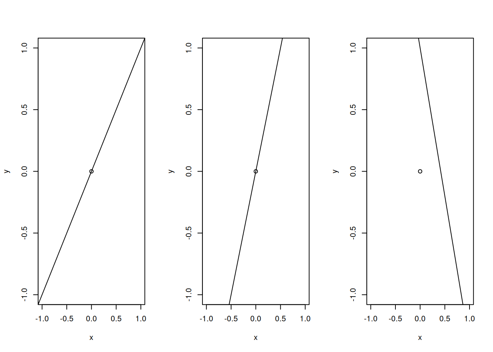
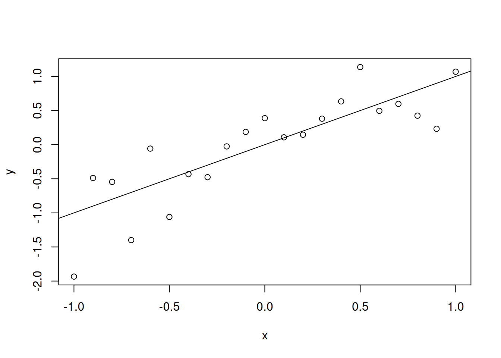
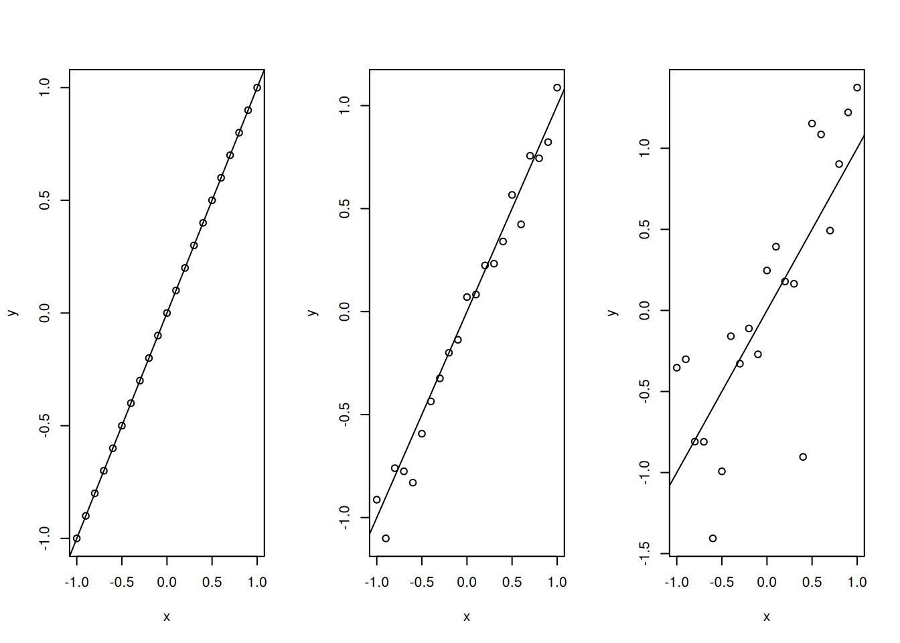

Sesión 8: modelos lineales I
Todos son modelos lineales
Allí donde vean:
- ANOVAs
- ANCOVAs
- Regresiones múltiples
- Correlaciones, correlaciones parciales…
Todos, todos, en el fondo, son algún tipo de modelo lineal. En conjunto, reciben el nombre de Modelo Lineal General
Tamibén modelos lineales
- Regresion logística
- Regresión multinomial
- Regresión “de poisson”
Estos y otros modelos lineales son algo particulares, y reciben el nombre de Modelo Lineal Generalizado
Qué cosa no son modelos lineales
- Regresiones no lineales (obvio)
- Curvas spline
- Random Forests
- Redes neuronales (Deep Learning)
- Support Vector Machines (SVM)
- Machine Learning en general (EXCEPTO REGRESIÓN LOGÍSTICA)
¿Qué es un modelo lineal?
Es un modelo estadístico: una expresión matemática que captura algunos aspectos (idealizados) de un conjunto de datos, en particular del proceso generador de datos.
Un modelo lineal tiene el formato clásico de una recta:
y = ax + b
y- es la variable dependiente, o de respuesta, la variable a predecir.x- es la variable independiente, o predictora, que se usa para predeciry.
Ecuación de la recta
Un modelo lineal tiene el formato clásico de una recta:
y = ax + b
Parámetros
a- es la pendiente (slope), la “proporción” entre el cambio enxy el cambio eny.b- es el intercepto, ordenada en el origen, o punto de corte (en criollo). Cuandoxvale0,y=b.
Ejemplo
a=1, b=0 -- a=2, b=0 -- a=-2.4, b=1La recta como modelo estadístico

- Hay error: los valores de los datos no son exactamente los que predice la recta.
Modelo lineal
- Es una expresión de recta + un término de error
- \(\sigma^2\) es la cantidad de error del modelo.
Modelo lineal y error
\(\sigma^2 = 0 \qquad \qquad \qquad \sigma^2 = 1 \qquad\qquad\qquad \sigma^2 = 4\)

Modelo lineal
- ¿Cómo se estima un modelo lineal?
- Mediante el ajuste por mínimos cuadrados (least-squares fit).
- La idea es encontrar, para un conjunto de datos, los parámetros \(a\) y \(b\) que minimicen el error.
- Esta búsqueda tiene una solución algebraica analítica muy sencilla (se calcula muy rápidamente).
\(y=ax + b + \operatorname{err}(0,\sigma^2)\)
Ejemplo en R
Call:
lm(formula = y ~ x)
Coefficients:
(Intercept) x
0.03644 1.02872 Ejemplo en R
Call:
lm(formula = y ~ x)
Residuals:
Min 1Q Median 3Q Max
-1.3514 -0.1807 0.0433 0.2589 0.6390
Coefficients:
Estimate Std. Error t value Pr(>|t|)
(Intercept) 0.03644 0.10697 0.341 0.737
x 1.02872 0.17666 5.823 1.31e-05 ***
---
Signif. codes: 0 '***' 0.001 '**' 0.01 '*' 0.05 '.' 0.1 ' ' 1
Residual standard error: 0.4902 on 19 degrees of freedom
Multiple R-squared: 0.6409, Adjusted R-squared: 0.622
F-statistic: 33.91 on 1 and 19 DF, p-value: 1.31e-05Salida de summary: Coeficientes
- Coeficientes: los parámetros.
- (Intercept): el intercepto, o punto de corte.
- SDTOTAL: en el ejemplo, tenemos un coeficiente de pendiente para la variable de dominancia.
- Estimaciones: los valores de los parámetros
- Std. Error: el error estándar de la estimación
- t value: valor del estadístico \(t\): estmación / error estándar.
- Pr(>|t|): p-valor de una prueba \(t\) de dos colas.
Salida de summary: Info de ajuste
- Residuals: info sobre la distribución de los residuos.
- Los residuos son las diferencias entre cada valor real y el valor “predicho” por la recta.
- Deberían ser de mediana cercana a 0, y de poca variabilidad (sino el fiteo es malo)
- Deberían tener distribución normal (QQ plot).
- Multiple R-squared: estadístico \(R^2\) de pearson. En este caso es el viejo y conocido \(R^2\) de dos variables numéricas.
- F-statistic: Prueba \(F\) de ajuste del modelo. DF: grados de libertad. También figura el p-valor de la prueba \(F\).
Relación de un fiteo lineal con correlación
Pearson's product-moment correlation
data: datosLimpios$NPI16TOTAL and datosLimpios$SDTOTAL
t = 4.0934, df = 308, p-value = 5.435e-05
alternative hypothesis: true correlation is not equal to 0
95 percent confidence interval:
0.1187567 0.3301903
sample estimates:
cor
0.2271485 Variables categóricas
Dummy coding
- El formato de modelo lineal puede usarse para variables predictoras categóricas.
- Para eso es necesario transformar los niveles de la variable, en representaciones numéricas.
- La opción más usada es usando dummy coding.
Dummy coding
- Sex: Variable categórica: 2 niveles
- Podemos codificarla como una variable numérica \(x\):
\(x=1\): Mujer
- Entonces:
- si \(x=0\),
y=b->brepresenta el promedio para el nivel “Hombre” - si \(x=1\),
y=a+b->a+brepresenta el promedio para el nivel “Mujer”arepresenta la diferencia entre los promedios de Mujer y Hombre. (Mujer-Hombre).
- si \(x=0\),
Nivel de referencia
- Al hacer dummy coding, el intercepto se vuelve el promedio para un nivel.
- En el ejemplo anterior, este nivel es es “Hombre”.
- Ese es el nivel (o categoría) de referencia
- El valor del intercepto es el promedio del nivel de referencia.
- La “pendiente”
atiene la diferencia entre el otro nivel y el de referencia.
Ejemplo: Narcisismo vs sexo
Call:
lm(formula = NPI16TOTAL ~ Sex, data = datosLimpios)
Residuals:
Min 1Q Median 3Q Max
-3.6549 -1.9149 0.0851 1.3451 8.3451
Coefficients:
Estimate Std. Error t value Pr(>|t|)
(Intercept) 3.6549 0.1943 18.809 < 2e-16 ***
SexF -0.7400 0.2575 -2.874 0.00431 **
---
Signif. codes: 0 '***' 0.001 '**' 0.01 '*' 0.05 '.' 0.1 ' ' 1
Residual standard error: 2.316 on 328 degrees of freedom
Multiple R-squared: 0.02457, Adjusted R-squared: 0.0216
F-statistic: 8.263 on 1 and 328 DF, p-value: 0.004311Ejemplo: Narcisismo vs sexo
Call:
lm(formula = NPI16TOTAL ~ Sex, data = datosLimpios)
Residuals:
Min 1Q Median 3Q Max
-3.6549 -1.9149 0.0851 1.3451 8.3451
Coefficients:
Estimate Std. Error t value Pr(>|t|)
(Intercept) 3.6549 0.1943 18.809 < 2e-16 ***
SexF -0.7400 0.2575 -2.874 0.00431 **
---
Signif. codes: 0 '***' 0.001 '**' 0.01 '*' 0.05 '.' 0.1 ' ' 1
Residual standard error: 2.316 on 328 degrees of freedom
Multiple R-squared: 0.02457, Adjusted R-squared: 0.0216
F-statistic: 8.263 on 1 and 328 DF, p-value: 0.004311- El intercepto es el promedio de narcisismo para los hombres.
- La “pendiente” SexF indica la diferencia entre mujeres y hombres (¡notar que es negativa!)
Corroborando:
# A tibble: 2 × 3
Sex media error
<fct> <dbl> <dbl>
1 M 3.65 0.207
2 F 2.91 0.160[1] 0.74Corroborando:
Welch Two Sample t-test
data: datosLimpios[datosLimpios$Sex == "M", "NPI16TOTAL"] and datosLimpios[datosLimpios$Sex == "F", "NPI16TOTAL"]
t = 2.828, df = 283.55, p-value = 0.005017
alternative hypothesis: true difference in means is not equal to 0
95 percent confidence interval:
0.2249565 1.2551154
sample estimates:
mean of x mean of y
3.654930 2.914894 Más de dos niveles …
- ¿Qué pasa si tengo una variable de 3 niveles?
- Voy a poder codificar 2 niveles en 2 coeficientes… (1 intercepto, 1 pendiente)
- Voy a necesitar codificar el otro nivel en otro coeficiente (otra pendiente)
Entonces a la recta \(y=ax+b\), le agregamos otra variable…
\(y=a_2x_2+a_1x_1+b\)
Más de dos niveles …
Ejemplo: Variable: Tipo de Oferta (3 niveles)
| Nivel | \(x_2\) | \(x_1\) | intercepto |
|---|---|---|---|
| justas | 0 | 0 | si |
| medias | 0 | 1 | si |
| injustas | 1 | 0 | si |
- Para cada nivel voy a tener un coeficiente
Más de dos niveles …
- Entonces:
- si \(x_1=0\) y \(x_2=0\), \(y=b\)
- \(b\) representa el promedio para el nivel “Justas”
- si \(x_1=1\), \(y=a_1+b\)
- \(a_1+b\) representa el promedio para el nivel “Medias”
- \(a_1\) representa la la diferencia entre los promedios de Medias y Justas. (Medias-Justas).
- si \(x_2=1\), \(y=a_2+b\)
- \(a_2+b\) representa el promedio para el nivel “Injustas”.
- \(a_2\) representa la la diferencia entre los promedios de Injustas y Justas. (Injustas-Justas).
- si \(x_1=0\) y \(x_2=0\), \(y=b\)
Veamos…
Call:
lm(formula = enojo ~ tipo_oferta, data = parts3)
Residuals:
Min 1Q Median 3Q Max
-4.0255 -0.9820 -0.2913 0.8754 4.8514
Coefficients:
Estimate Std. Error t value Pr(>|t|)
(Intercept) 0.4580 0.1733 2.643 0.00861 **
tipo_ofertainjustas 3.5676 0.2450 14.559 < 2e-16 ***
tipo_ofertamedias 1.5240 0.2450 6.219 1.51e-09 ***
---
Signif. codes: 0 '***' 0.001 '**' 0.01 '*' 0.05 '.' 0.1 ' ' 1
Residual standard error: 1.826 on 330 degrees of freedom
(3 observations deleted due to missingness)
Multiple R-squared: 0.3928, Adjusted R-squared: 0.3891
F-statistic: 106.7 on 2 and 330 DF, p-value: < 2.2e-16Corroborando…
# A tibble: 3 × 3
tipo_oferta media error
<fct> <dbl> <dbl>
1 justas 0.458 0.0718
2 injustas 4.03 0.250
3 medias 1.98 0.149 Contrastes
- Los parámetros del modelo nos informan del nivel de referencia (intercepto), y de las diferencias entre éste y los otros niveles (“pendientes”).
- Entonces, las “pendientes” son de hecho contrastes
- La prueba t compara la media del nivel contra la media del nivel de referencia.
- ¿Cómo hacer los otros contrates?
Contrastes
- Hay muchas formas de hacer contrastes.
- La que me gusta a mí, implica usar el paquete
emmeans.
emmeans
- Permite obtener medias marginales (promediando sobre los niveles de otras variables)
- Esto va a ser muy útil cuando veamos regresión múltiple.
- Por ahora lo usaremos para hacer contrastes.
- Hay varias maneras de hacer contrastes con
emmeans
Contraste simple con emmeans
tipo_oferta emmean SE df lower.CL upper.CL
justas 0.458 0.173 330 0.117 0.799
injustas 4.026 0.173 330 3.685 4.366
medias 1.982 0.173 330 1.641 2.323
Confidence level used: 0.95 contrast estimate SE df t.ratio p.value
justas - injustas -3.57 0.245 330 -14.559 <.0001
justas - medias -1.52 0.245 330 -6.219 <.0001
injustas - medias 2.04 0.245 330 8.339 <.0001
P value adjustment: tukey method for comparing a family of 3 estimates Contraste controlando por comparaciones múltiples
contrast estimate SE df t.ratio p.value
justas - injustas -3.57 0.245 330 -14.559 <.0001
justas - medias -1.52 0.245 330 -6.219 <.0001
injustas - medias 2.04 0.245 330 8.339 <.0001
P value adjustment: bonferroni method for 3 tests Conclusión 1
- Variable numérica (2 parámetros):
- 1 intercepto (valor de \(y\) cuando \(x=0\))
- 1 pendiente (cuánto cambia \(y\) cuando cambia \(x\) 1 unidad)
- Variable categórica (1 parámetro por nivel):
- 1 intercepto (promedio nivel de referencia)
- 1 “pendiente” por cada nivel extra (diferencia con el nivel de referencia)